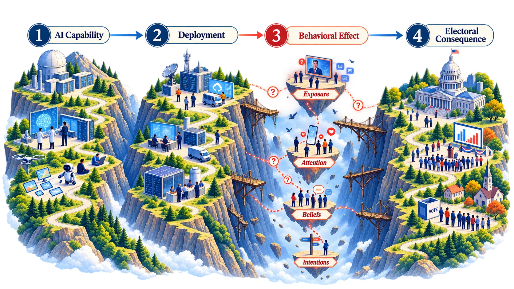

Working draft · conceptual explainer
The CDE Gap, explained
1 min 33 sec · silent, with on-screen text

The gap
Capability is easier to observe. Electoral effects are harder to establish.
A model can generate a convincing message. That does not tell us whether anyone received it, believed it or changed a decision.
The Capability–Deployment–Effect Gap keeps those questions separate.
Start when ready, or choose a chapter. Nothing plays automatically.
Read the full explanation instead
The gap
Capability is easier to observe. Electoral effects are harder to establish.
A model can generate a convincing message. That does not tell us whether anyone received it, believed it or changed a decision.
The Capability–Deployment–Effect Gap keeps those questions separate.
Capability
An output is not an operation.
Tests can show what a model or configured service produces. A plan or synthetic prototype does not establish that a campaign ran.
Part I asks what an operator can do. Part II examines what evaluations actually measure.
Deployment
The system changes the risk.
An actor can connect a model to data, trusted identities, memory, tools and distribution. The question is who controls those connections and for what purpose.
The relevant object is the deployed system—not its model name alone.
Human response
Exposure is not a changed mind.
People must encounter and process a message before it can change beliefs or choices. Bounded studies find effects; real-world reach, persistence and electoral attribution remain separate questions.
This is not evidence of zero effect. Every additional claim needs additional evidence.
Harm
Harm does not wait for changed votes.
Impersonation, harassment and confusion can harm people. Corrections and investigations can also consume attention and institutional resources—even without a demonstrated election-result effect.
Documented harm and inferred opportunity cost are not the same measurement.
Agency & action
Keep power contestable.
Agency transfer means practical control shifts from people or public institutions towards the actor operating the system. The programme studies the conditions for that shift; it does not measure its full extent.
Address evidenced mechanisms. Preserve independent scrutiny, meaningful refusal and practical exit. Measure what the control actually changes.